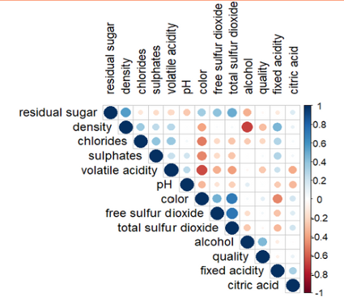

Wine Quality Rating Prediction
For the final project in IST 687, I collaborated on an analysis of Vinho Verde wine to identify which chemical attributes most influenced quality ratings. The dataset included scores assigned by taste testers on a scale from 0 to 10, along with measurements such as pH, sulfates, and other physicochemical properties.

As an introductory data science course, this project covered key stages of the data science lifecycle, from data exploration to predictive modeling. Using R, we generated actionable insights by identifying relationships between wine characteristics and quality. Our analysis found that volatile acidity, chlorides, and density were negatively associated with wine quality, while alcohol content showed a positive relationship.

I contributed across all phases of the project, with a primary focus on visualizing the distributions of wine characteristics. Understanding the variation and spread of these features was critical to interpreting the data effectively.

Additionally, we used a correlation matrix to examine relationships both between individual attributes and with the quality rating. To extend our analysis, we developed a decision tree model to predict wine quality based on these features.